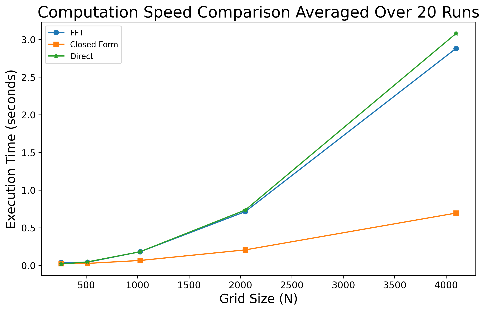
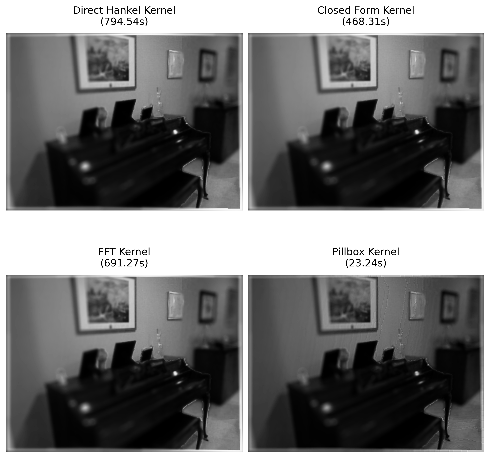
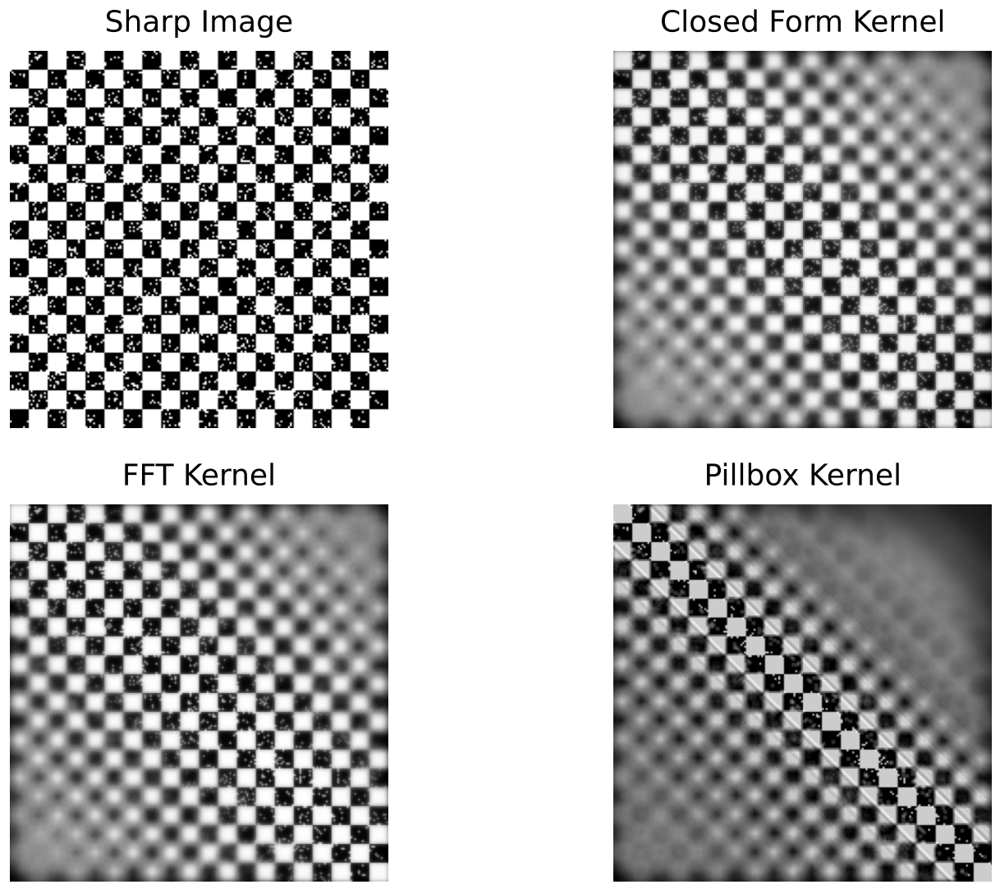

Fast PSF Synthesis with Defocused and Spherical Aberration
Abstract
Accurately estimating the point spread function (PSF) of an optical system requires solving free-space wave propagation, which entails evaluating a diffraction integral. This integral is traditionally computed numerically using FFT or Hankel transforms, as it lacks a closed-form solution. We show that, under defocus and spherical aberration, the diffraction integral admits an approximate closed-form solution by combining a piecewise Bessel approximation with Gaussian-type integrals. Based on this result, we develop a fast wave-based PSF simulator with linear complexity in the radial resolution. The proposed, un-optimized simulator achieves up to a 2× speedup over Hankel-based integration and a 4× speedup over FFT while closely matching wave-optical PSFs, enabling efficient large-scale depth-of-field synthesis

Direct comparison of 2D defocused PSF with the standard technique of computing the Fourier Transform of the optical pupil function using the FFT algorithm is presented. For reasonable values of defocus strength (Cd < 10), there is strong agreement in the computed PSF.

Direct comparison of a spherically aberrated 2D PSFs agaisnt standard methods is presented. Our approach extends the approximated closed form solution for the case of only defocus and breaks down the spherical aberration into a partiioned set of multiple defocus integrals each with their own defocus strength.

Our method proves to outpace the Fast Fourier Transform algorithm as well as a direct computation of the first order Hankel Integral which the wave integral can be reduced to. As shown our approximation excels for larger grid sizes where fine details in the PSF are desired.

Rendering the depth of field of a scene with a 2D convolution is computationally expensive. Here, with our method, we see significant improvements in the computational speed, enabling faster real time rendering of live scenes.

Here is another example of the improvement in execution time from rendering a depth of focus for a checkboard pattern
Paper
BibTeX
@article{YourPaperKey2024,
title={Your Paper Title Here},
author={First Author and Second Author and Third Author},
journal={Conference/Journal Name},
year={2024},
url={https://your-domain.com/your-project-page}
}